I've re-uploaded DragonInquisition.com's fantastic builds because their site went down and I haven't been able to visit them in some time.
The other builds can be found on their respective pages:
Rogue Builds
Looking for effective DA: Inquisition rogue builds? You've come to the right place. All of these builds have been tested & played extensively on Nightmare difficulty, and come with explanations on how to use the build, and which points to take as you level up. Play as the deadly Assassin, the versatile Tempest, or the team-oriented Artificer.
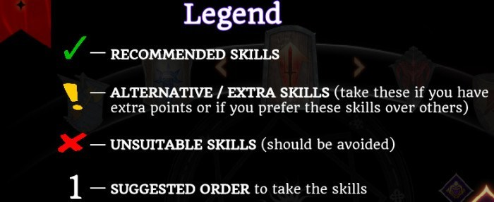
Contents
Dual Wield Daggers Assassin Rogue Build
The Dual Wield Assassin rogue is a classic whatever Dragon Age game you're playing. High damage, mobility and use of stealth makes this build both fun to play and viable on all difficulties. With the recent changes to Shadow Strike, this build is now even stronger than before.
Points Spent: 19+
Double Daggers: Twin Fangs / Ripping Fangs / Dance of Death / Sneak Attack / Deathblow / Thrill of Victory
Subterfuge: Stealth / Evasion / Evade / Shadow Strike / Quick Blade
Assassin: Hidden Blades / Overkill / Throatcutter / Knife in the Shadows / Mark of Death / Mark of Doom / Gaps in the Armor
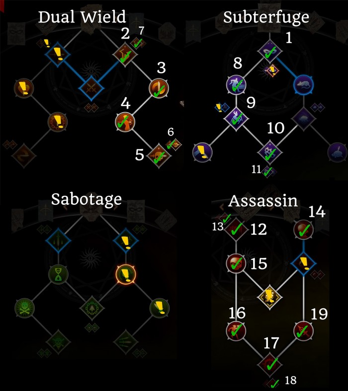
Some notes on skills: Once you've unlocked the basic build, you have several options. If you find that you're always low on stamina, you can go down into sabotage and pick up the Looked Like it Hurt passive. If you have the Trespasser DLC, you can also unlock the Clinging Shadows upgrade for Stealth which will keep you safe for a few seconds after using abilities out of stealth.
If you're looking for more damage, you can pick up the two armor-reduction passives – Ambush in Subterfuge, and Cheap Shot in Sabotage, as well as the Hidden Step upgrade to make Evade do damage. Finally, can also further boost your overall damage by picking up the two passives on the left side of the Dual Wield tree – Bloodied Prey and Unforgiving Chain.
For your Focus skill, use either Mark of the Rift or Cloak of Shadows, depending on whether you're using the build on your Inquisitor or not.
Basic Gameplay:
- Start out every fight by going Stealth -> Hidden Blades. This will make every hit of Hidden Blades do critical damage
- Always flank your targets for extra damage and effects (e.g. Ripping Fangs, Quick Blade)
- Re-activate stealth as much as possible for extra damage and guaranteed critical hits (especially important with Shadow Strike and Hidden Blades)
- Use Mark of Death as much as possible on enemies that take a while to kill – usually bosses
- Use Deathblow whenever enemies are close to, or below 50%
- Use Shadow Strike primarily to get back stamina as well as deal good damage
- Use Evade to move quickly and easily around the battlefield
- If you're really short on CC in your party, consider picking up Knockout Bomb
Dual Wield Daggers Tempest Build
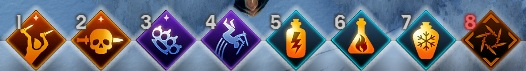
In my experience this is one of the highest damage builds for rogues, and is also very fun to play thanks to Tempest Flasks. With the recent changes to DA: I's skills, I've updated this build to include Shadow Strike for a more well-rounded experience.
Points Spent: 20+
Dual Daggers: Twin Fangs / Rippling Fangs / Dance of Death / Sneak Attack / Deathblow / Thrill of Victory
Subterfuge: Stealth / Evasion / Evade / Shadow Strike
Tempest: Everything except Flask of Frost upgrade
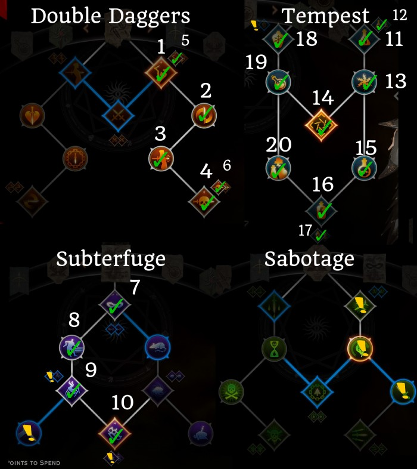
The key mechanic of this build is the same as the Archer version – using flasks back to back to maintain all of your passive bonuses, while at the same time using each flask's unique effect to your advantage. Most of your damage will come from spamming Twin Fangs or Deathblow while under the effect of Flask of Fire.
Basic Gameplay
- Use Evade for mobility
- Make sure to always attack from the back or flank to get extra crit chance
- Your main damage combo is: Flask of Fire -> spam Twin Fangs OR Deathblow, depending on the enemy's health; If health is above 50%, Twin Fangs is better DPS, if below, you should be using Deathblow
- If you're fighting a lot of melee enemies, use Flask of Frost next; this will freeze nearby enemies and give you the chance to perform a shatter Combo by breaking the freeze with one of your 3 DPS skills
- Shadow Strike is used mostly for activating shatter combos (because it is possible to hit multiple targets), when your stamina is low, or when both Twin Fangs and Deathblow are on cooldown
- Follow up Flask of Frost with Flask of Lightning and continue using your 3 damage skills
- You don't necessarily have to use the flasks in this order, but the basic rotation is: FoFire – >FoL -> FoFrost
Flask Tips:
- Flask of Lightning is great if you're about to die, or if you need to resurrect a fallen party member, because it effectively freezes time for its duration
- Flask of Frost is great for freezing multiple melee enemies, and then performing a shatter combo
- Activating Flasks one after another increases their duration by 3 seconds (Ride the Storm passive)
A note on Masterworks: If you're having trouble surviving consider crafting an item with a Guard on Hit masterwork. Fade-Touched-Silverite (+5 Guard on hit) should be enough to deal with any survivability issues, especially in combination with FoL and FoF.
Nightmare Archer Build (Early Game)
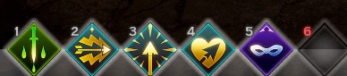
This is a barebones, early game (level 1-11~) rogue archer build meant to give you a solid archery base. We're avoiding Leaping Shot since it doesn't really shine until you unlock one of the rogue specializations.
Points Spent: 11
Archery Tree: Death from Above / Long Shot / Eagle Eye / First Blood / Explosive Shot / Pincushion / Full Draw / Stunning Shot
Sabotage Tree: Poisoned Weapons / Infected Wounds OR Leeching Poison
Subterfuge Tree: Stealth / Easy to Miss
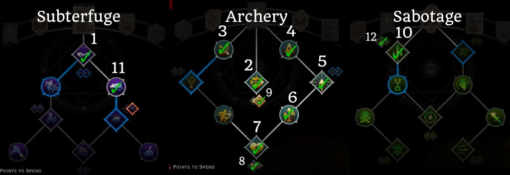
Note that you should only take the Long Shot upgrade if you have the new Trespasser version (Eagle Eye), otherwise skip it. Meanwhile for the Poisoned Weapons upgrade, you can try out either skill upgrade; the new Leeching Poison upgrade may be useful if you take damage frequently.
Basic Gameplay:
- Always maintain maximum distance and try to attack from elevation, to take advantage of both Death from Above and Long Shot
- Use Poisoned Weapons before a fight
- Stealth, and then start the fight with Full Draw to deal massive damage, and CC one target
- Use Explosive Shot only when enemies are grouped up
- Use Long Shot as your primary DPS skill
- Use Stealth to either lose enemy aggro, or to boost the damage of Full Draw/Long Shot
Tempest Archer Build
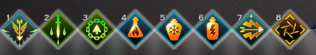
This is a mid to late game build which slightly modifies the basic archer build, in addition to taking the Tempest specialization skills. There are two key mechanics for this build: using your flasks back to back to maximize the bonuses you get from your Tempest passives, and using Hook & Tackle along with Leaping Shot and Flask of Fire for a powerful combo.
Points Spent: 20+
Archery Tree: Death from Above / Long Shot / Eagle Eye / First Blood / Explosive Shot / Pincushion / Leaping Shot
Sabotage Tree: Poisoned Weapons / Fighting Dirty / Hook & Tackle
Tempest Tree: Everything except Flask of Frost upgrade (optional skill)
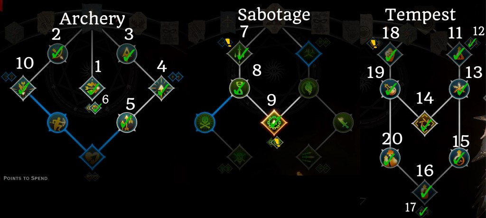
To execute the Leaping Shot combo you hook in, activate fire flask (Unquenchable Flames upgrade), and then use Leaping Shot four times to cause massive damage to your target. This combo is especially effective against large targets (bosses and dragons), because your 12 attacks from leaping shot are less likely to miss.
Note: If you have the Trespasser DLC, make sure to pick up the Thunderstruck upgrade for Lightning Flask. You can also try out the new Hook & Tackle upgrade (No Escape) – it is a big buggy at the moment, but in some cases it can greatly increase the accuracy of your Leaping shot combo on smaller enemies.
Artificer Archer Build
The Artificer Archer offers a unique playstyle that is somewhere between a melee and a ranged rogue because you will always have to move around to make optimal use of your skills. Like the melee version of this build, the archer relies on the interaction of “Opportunity Knocks” and “Looked Like it Hurt” passives with other skills.
Points Spent: 20+
Archery: Long Shot / First Blood / Death From Above / Leaping Shot / Explosive Shot / Pincushion
Subtlety: Stealth
Sabotage: Caltrops / Looked Like It Hurt / Hook and Tackle
Artificer: Spike Trap / Pyrotechnics / Opportunity Knocks / Set Them Up / Hail of Arrows / Elemental Mines / One-Shot / And Take Them Down / Fallback Plan / Tricks of the Trade
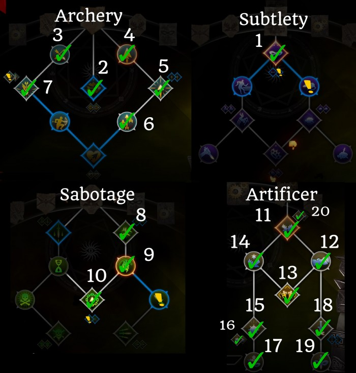
Opportunity Knocks reduces your cooldown times whenever you or an ally crits, while Looked Like it Hurt refunds stamina whenever you crit. Coupled with high critical strike chance and skills like Leaping Shot, this allows you to reduce your cooldown times very quickly.
In addition, the Artificer provides 3 great passives for the entire party – 5% extra crit chance, 10% damage, and 10% longer status effect durations.
Note: Late game you can drop either Long Shot or Explosive Shot. By that point your cooldowns will reset so quickly that you'll only really have time to use Spike Trap, Elemental Mines, and Leaping Shot.
Basic gameplay:
- Use Fallback plan before you engage in combat, so you can then teleport back to safety if in danger (optional)
- To start fights, you can either stealth and place Spike trap right on top of enemies, or use Hook & Tackle
- Your basic play style will be to use Hook & Tackle – > use Spike Trap -> use Leaping Shot -> Use Elemental Mines
- Explosive Shot can also be used as filler, but it's only worth it versus multiple enemies
- Your focus skill (Hail of Arrows) is very powerful and will allow you to essentially spam Leaping Shot non-stop for the duration
DW Melee Artificer Build
Although Artificer is usually seen as a ranged specialization, it actually works really well as melee. The core mechanic of the Artificer doesn't really change – you're still relying on the combination of the Opportunity Knocks and Looked Like It Hurt passives to quickly regenerate stamina and reduce cooldowns whenever you crit.
With the changes to Spike Trap and Spinning Blades as well as the introduction of the Trespasser DLC skill toggles, this build now even more powerful than before.
Points Spent: 19+
Dual Daggers: Twin Fangs / Dance of Death / Sneak Attack / Flank Attack / Bloodied Prey / Unforgiving Chain / Spinning Blades
Subterfuge: Stealth
Sabotage: Caltrops / Looked Like It Hurt
Artificer: Spike Trap / Pyrotechnics / Set Them Up / Opportunity Knocks / Elemental Mines / One-Shot / And Take Them Down / Fallback Plan / Tricks of the Trade
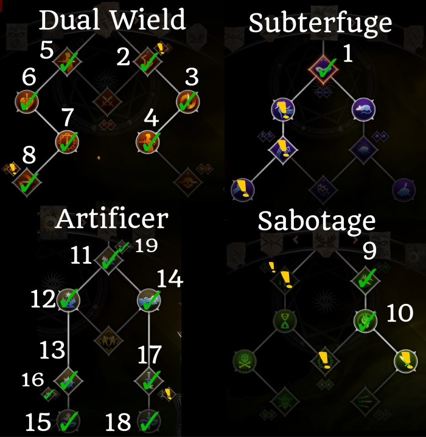
We're taking Spinning Blades instead of Deathblow for this build; there's 2 reasons for this. One, Spinning Blades has multiple attacks, which means you can crit more often and thus reduce your cooldown times faster. Two, Spinning Blades now also spreads debuffs from your target to surrounding enemies, which works really well together with your mines and other party members' effects like freeze or burn.
In addition to good damage, the Artificer provides powerful passives for the entire party – 5% extra crit chance, 10% damage, and 10% longer status effect durations.
With proper gear, you will be critting so often that you may not have time to use anything other than Spike Trap and Elemental Mines, since they will come off cooldown really quickly.
Skill Notes:
- If you have the Trespasser DLC, be sure to pick up the new “One-Shot” Elemental Mines upgrade as it is very, very strong.
- This build has a lot of skills, but only has room for 8. 6 Core skills that you should always use are the following: Spike Trap, Elemental Mines, Spinning Blades, Stealth, Twin Fangs, and a mobility skill (either Hook & Tackle or Evade). The other 2 skills are up to you. For example if you're playing this build on your Inquisitor, one of those can be Mark of the Rift. You can also use Flank Attack, Fallback Plan, and Poison Weapons.
Basic Gameplay:
- Start out by stealthing and placing a Spike Trap either on top of the enemy or near your tank
- Use Elemental Mines & Spike Trap as your main DPS skills
- Use Spinning Blades while your traps and mines are on cooldown; it is best to use it right after elemental mines to spread the mine effects to other enemies
- Use Evade or Hook & Tackle for mobility; I personally prefer Evade
- Use Twin Fangs only to activate combos (on a frozen target, for example) or when other DPS skills are on cooldown
- If you ever get in trouble, you can use Fallback Plan to teleport to safety
Items:
This build benefits a LOT from critical chance. More critical chance means you reduce your cooldowns/get stamina back more often. Consider crafting gear with that has either cunning or + critical strike chance on it, and be on the lookout for unique items like the Superb Amulet of Cunning.
Assassin Archer Build
The cool thing about this build is that it seems like Bioware patched the bug that prevented the passive skill “Knife in the Shadows” from working with archer skills. This passive skill makes your first attack out of stealth auto crit, which is VERY strong when coupled with either Full Draw (800% + 800% bonus damage if enemy at full health) or Long Shot.
Points Spent: 18+
Archery: Long Shot / Death from Above / Leaping Shot / First Blood / Explosive Shot / Pincushion / Full Draw
Subterfuge: Stealth
Sabotage: Caltrops / Looked Like It Hurt
Assassin: All skills except Knockout Bomb
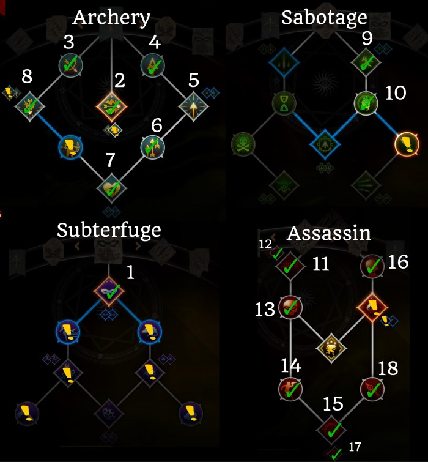
Note: If your party is low on CC, you can take Knockout Bomb and use it instead of Explosive Shot. Also if you have the Trespasser DLC, make sure to pick up the Shot From the Shadows upgrade for Leaping Shot and the Eagle Eye upgrade for Long Shot after completing the core build.
For your final skill, you can either take Cloak of Shadows (if you're using this build on Cole) or Mark of the Rift if on your Inquisitor.
Basic Gameplay:
- Open up with stealth into Full Draw – this will make it auto crit and can sometimes one shot targets
- Put up Mark of Death, then follow up with Hidden Blades and and Long Shot
- Use the Mark right before its about to expire for extra damage
- Keep using Stealth every time it comes off cooldown, and combo it with either Full Draw, Hidden Blades, or Long Shot for the auto-crit
- Use Explosive Shot for AOE damage when enemies are close together
- Use Leaping Shot either for extra damage when everything else is on cooldown, or to escape